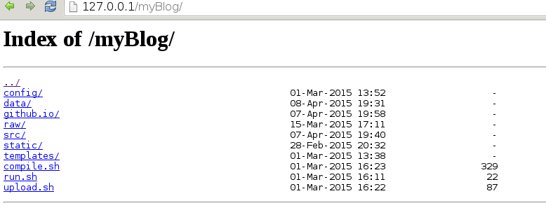
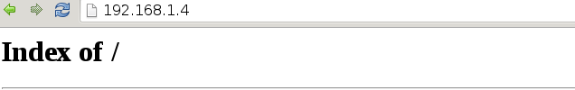

How to watch video from your computer on every device at home without downloading it[in two steps]
Why ?
I usually watch movies and read books from my android phone and tablet. So I decided, it would be great if I could use my main hard disk and share it to the network. I came across this method accidentally. And it showed itself very useful.
So, You will need
- Linux computer. Preferably Debian
- Android device
- Standart wifi router
- A little patience
Let's go on. Step one. Installation.
You will definitely need nginx server. It showed itself pretty decent on even old computers. Install it like this. ```sudo apt-get install nginx
You will probably need ffmpeg file converter. Install it like this
```sudo apt-get install ffmpeg
You will need media player. Install vlc media player on your android device.
Step two. Configuring nginx
Let's have our hands a little bit dirty. Execute next commands ```sudo -s cd /etc/nginx/sites-enabled touch home-shared
Put in file *home-shared* configuration like this:
```server {
listen 80;
location / {
autoindex on;
root /home/mik/shared;
}
}
Where root is absolute path to your shared folder It would go like this ```echo "server { listen 80; location / { autoindex on; root /home/mik/shared; } }" > home-shared
Restart your nginx server by:
```/etc/init.d/nginx restart
In your browser, go to 127.0.0.1.
You must see something like this.

Now, You must try to see this with another computer in your network.
Your ip address you can see like this
sudo ifconfig | grep "inet addr"
Select that one wich starts with 192.168.1.
Go to your android device. Or to another computer. And type into address bar that ip. Like this.

If you see directory content. Congratulations. If you don't, try disabling your firewall. Now You can put any video into that directory. And vlc from your android device will play it on the fly.
In the next part of this tutorial I will tell how to convert fast any video, so you can feed it to vlc without any problems.
I always can be wrong, or not having known something important. If you find an error, please tell me at mklimoff222 at gmail.com.